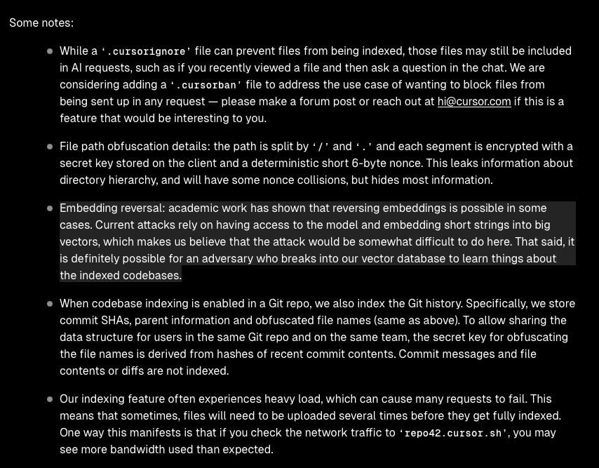

supercharge your workflow with
Cursor
IDE
ai-powered development
Cursor
- a vscode fork supercharged with ai capabilities
- context-aware ai assistance
- the magical @ operator
- cursorrules & yolo mode
- best practices
like having 100 fingers

cmd+k / ctrl+k: edit code
- instantly edit code with natural language
- no need to manually rewrite complex logic
- works on selections or entire files
- example:
"refactor this function to use async/await instead of promises"
ctrl+l: chat with your code
- contextual chat that understands your codebase
- ask questions about implementation details
- get suggestions for improvements
- debug complex issues with ai assistance
- example:
"why might this function be causing a memory leak?"
composer: tackle complex tasks
- break down large coding tasks
- plan implementation steps
- generate code for each component
- ideal for new features or major refactoring
the @ operator: context is everything
- powerful way to reference different contexts
@file.js- reference specific files@folder/- entire directories@codebase- your whole project@notepad- internal notes@web- search the internet@docs- custom documentation
cursorrules: customize your experience
- custom instructions for the ai
- enforce coding standards
- example ruleset:
yolo mode: when you're feeling brave
- let ai make changes without confirmation
- great for repetitive, low-risk tasks
- can dramatically speed up your workflow
- warning: with great power comes great responsibility!
- always commit before major yolo operations
best practices
- be specific in your instructions
- use @ to provide relevant context
- review ai-generated code carefully
- commit before major changes
- build your own cursorrules over time
- use composer for complex tasks
- start with small, focused edits
productivity gains
- faster onboarding to new codebases
- minimaltime spent on stack overflow / google / docs
- faster debugging
- rapid prototyping
- automated handling of boilerplate code
- fewer context switches, information locality
- more time for creative problem-solving and architecture
limitations and drawbacks
- not a silver bullet, still need to write code
- likes to write a LOT of code
- does not admit when it's wrong
- can go down seriously wrong paths
privacy
infosec
infosec
infosec
pricing
- free tier - limited
- pro - 20$/month
- business - 40$/month
demo
the Warp terminal
demo
questions?
slides created with reveal.js